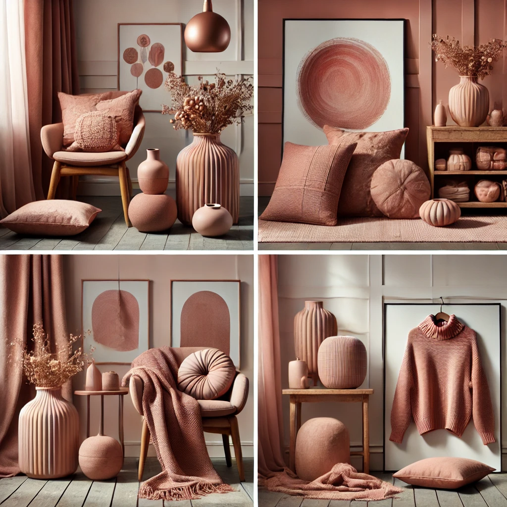
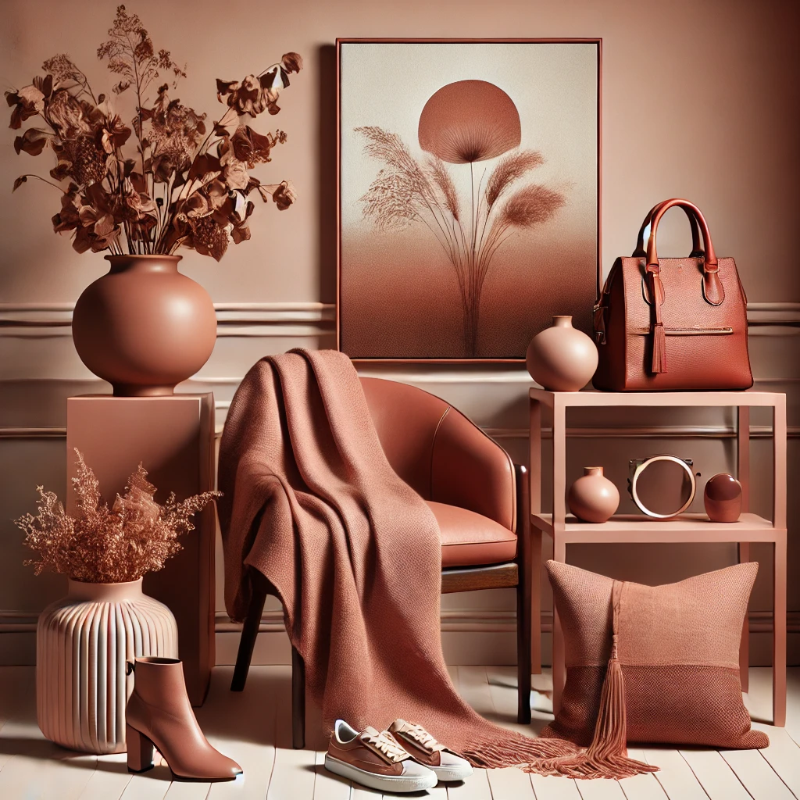

Here is a gallery featuring various objects in the rosy brown color. It includes elements of cozy interiors, fashion displays, and minimalist art, all centered around the warm and elegant tone of rosy brown.
Here is another gallery showcasing rosy brown-themed items, including soft home décor, abstract art, and a cozy outfit. The setting feels warm, stylish, and inviting, highlighting the elegance of the rosy brown color palette.
Here is another gallery featuring rosy brown-themed home décor and fashion elements, including a cozy blanket, ceramic vase, minimalist art, and accessories like a handbag and shoes. The setting combines elegance and warmth with soft lighting enhancing the overall ambiance.